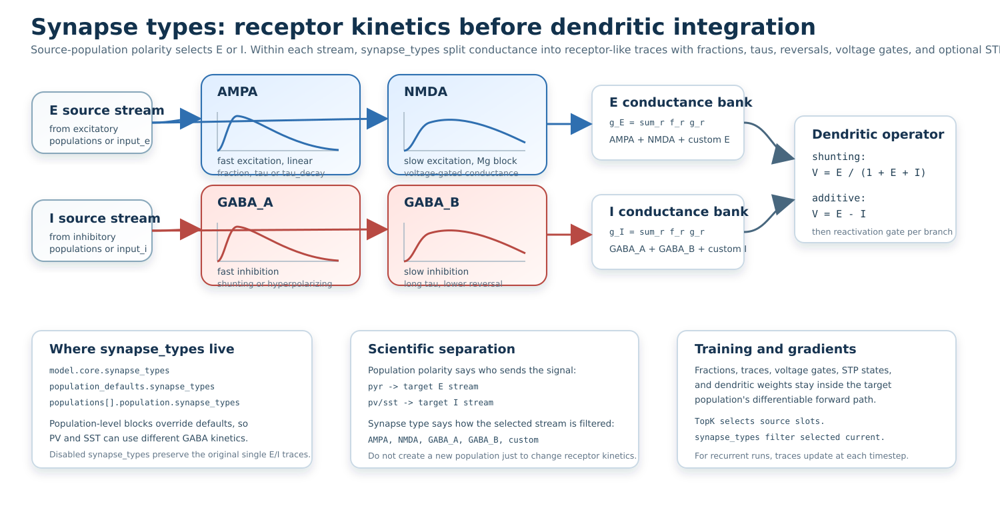
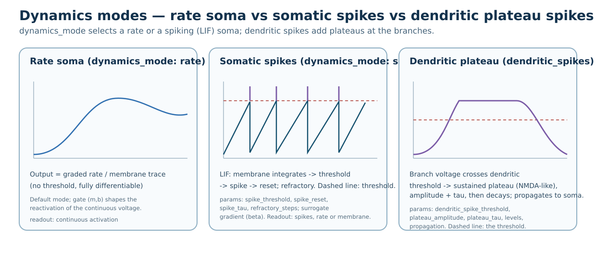

Temporal dynamics
These options give dendritic populations a state that carries over from one timestep to the next: receptor synapse types with their own kinetics and short-term plasticity, a spiking soma, dendritic spikes and plateaus, and feedback from the soma to the dendrites. Each option is set per population and is off by default. Use them for sequence tasks; a core that enables any of them processes its input one timestep at a time.
Where the options are set
The four features are population options (see Options reference). The core families accept them as follows:
Core |
Where the options go |
Effect of enabling one |
|---|---|---|
Population network ( |
|
The layer steps through time, with or without |
Unified E/I core ( |
The same fields in |
The layer must set |
Structured E/I core ( |
The blocks |
The core is built as the recurrent E/I network, and the settings apply to the excitatory and inhibitory populations of every layer (see Recurrent structured cores). |
The structured types flat_shunting, flat_additive,
flat_normalized_additive, flat_mlp, dendritic_mlp,
dendritic_signed and flat_signed cannot be made recurrent, and
enabling any of these features with them raises when the model is built.
A core with temporal state takes inputs of shape [batch, time, features];
a two-dimensional input is treated as a single timestep. Train it on sequence
data with training.main.strategy: recurrent (see Training strategies).
Besides these features, recurrent connections also give a core temporal state:
delayed connections and recurrent: true layers in population networks,
recurrent: true layers in unified E/I cores, and recurrent synapse counts in
structured E/I cores. None of the four features can be combined with a
non-unit or learnable leak, endpoint_tanh gates, indexed_release
synapses, signal_rounding, a cross_level_mode other than
hierarchical, or autograd_credit_mode: soma_broadcast; building such a
population raises.
In a structured E/I core, the four blocks use the population field names
without their prefix, for example model.core.dynamics.threshold for
spike_threshold and model.core.soma_feedback.mode for
soma_feedback_mode. This structured core enables all four features.
Its soma-feedback projections have signed weights, so the example explicitly
opts out of the biological constraint set:
model:
core:
type: dendritic_shunting
biological_neuron: false # Signed soma-feedback projections.
architecture:
excitatory_layer_sizes: [32]
inhibitory_layer_sizes: [8]
excitatory_branch_factors: [2, 2]
connectivity:
ee_synapses_per_branch_per_layer: [8]
ei_synapses_per_branch_per_layer: [8]
ie_synapses_per_branch_per_layer: [4]
synapse_types:
enabled: true
excitatory:
- {name: AMPA, fraction: 0.8, tau_rise: 0.5, tau_decay: 2.0}
- {name: NMDA, fraction: 0.2, tau_rise: 3.0, tau_decay: 70.0, magnesium_block: true}
inhibitory:
- {name: GABA_A, fraction: 1.0, tau_decay: 7.0}
dynamics:
mode: spike
threshold: 0.6
readout: rate
dendritic_spikes:
enabled: true
levels: distal
soma_feedback:
enabled: true
mode: gated
source: voltage
levels: distal
training:
main:
strategy: recurrent
model.core.dynamics also accepts the population field names of its own
options (dynamics_mode, spike_threshold, …) and of the dendritic-spike
and soma-feedback options (dendritic_spikes_enabled,
dendritic_spike_threshold, soma_feedback_mode, …); writing the same
option twice raises. Nesting the
dendritic_spikes or soma_feedback block inside model.core.dynamics,
or soma_feedback inside model.core.recurrent_ei, raises when the
configuration loads. model.core.spiking still loads as
model.core.dynamics, with a deprecation warning.
Receptor synapse types


Receptor types split the excitatory and inhibitory input of a compartment into traces with their own fraction, time course, reversal potential and voltage gate, here AMPA and NMDA for excitation and GABA-A and GABA-B for inhibition. The traces of each polarity are summed into conductances, which enter the shunting or additive voltage. The lower panels show where the block is set and the difference between a population’s polarity and a receptor type.
Polarity and receptor type are separate. The polarity of the source
population decides whether its output enters the excitatory or the inhibitory
input of a target. Receptor types (synapse_types) decide how that input
becomes a conductance over time. They belong to the receiving population: the
types set in a population’s options filter all of its excitatory or all of its
inhibitory input, whichever source population sent it, so they cannot be
assigned per connection. A receptor type does not create a population, a
connection or a readout; different populations of a layer can use different
receptor mixtures through their population blocks.
Receptor types are set in the population option synapse_types, for
example model.core.population_network.layers[].population_defaults.synapse_types.
Without receptor types, every compartment keeps one trace per input stream
(see Temporal constants and delays). With synapse_types.enabled: true, each
excitatory input current is divided among the excitatory types and each
inhibitory current among the inhibitory types, in proportion to their
fraction values (normalized within each polarity). For each type, the
current u is transformed by nonlinearity and conductance_power,
scaled by short-term plasticity when stp is enabled, and integrated into a
conductance trace g. With a single time constant (tau or
tau_decay):
where f is the normalized fraction. A type without a time constant uses
the population’s trace constant of the level. With tau_rise and
tau_decay the trace is a difference of two exponential traces:
with \(\alpha_r = e^{-\Delta t/\tau_{\text{rise}}}\) and
\(\alpha_d = e^{-\Delta t/\tau_{\text{decay}}}\). A voltage gate then
multiplies the trace by a function of the compartment’s output at the previous
step (see the field table). In shunting populations every trace g_k enters
the voltage with its reversal potential E_k:
where the sums run over the types of all four input streams, and
\(I_{\text{branch}}\) and \(G_{\text{branch}}\) are the current and
coupling conductance from the child branches. Reversal potentials use the
normalized convention of the model (excitation 1, inhibition 0) and must lie in
[-1, 2]. A type need not stand for a named receptor: a custom type such as
E_rev_0p4 with reversal_potential: 0.4 is a conductance class defined
by its reversal potential. Additive populations accept only the reversal
potentials 1.0 for excitatory and 0.0 for inhibitory types, and only
additive_mode: raw; use shunting populations for other reversal
potentials.
One excitatory and one inhibitory type with fraction: 1.0 and no time
constants reproduce the dynamics without receptor types exactly.
This recurrent layer gives its populations AMPA and NMDA excitation and GABA-A and GABA-B inhibition, with depressing short-term plasticity on GABA-B:
population_network:
layers:
- name: recurrent_layer
recurrent: true
readout_population: pyr
population_defaults:
ff_excitatory_synapses: 12
ff_inhibitory_synapses: 4
rec_excitatory_synapses: 8
rec_inhibitory_synapses: 4
synapse_types:
enabled: true
excitatory:
- {name: AMPA, fraction: 0.8, tau_rise: 0.5, tau_decay: 2.0, reversal_potential: 1.0}
- name: NMDA
fraction: 0.2
tau_rise: 3.0
tau_decay: 70.0
reversal_potential: 1.0
magnesium_block: true
inhibitory:
- {name: GABA_A, fraction: 0.9, tau_rise: 1.0, tau_decay: 7.0, reversal_potential: 0.0}
- name: GABA_B
fraction: 0.1
tau_rise: 20.0
tau_decay: 150.0
reversal_potential: -0.25
stp: {enabled: true, u0: 0.25, depression: 0.2}
populations:
- {name: pyr, polarity: excitatory, n_neurons: 32, branch_factors: [2, 2]}
- {name: pv, polarity: inhibitory, n_neurons: 8, branch_factors: [1]}
connections:
- {source: input, target: pyr}
- {source: input, target: pv}
- {source: pv, target: pyr}
- {source: pyr, target: pyr, timing: delayed}
- {source: pv, target: pyr, timing: delayed}
The synapse_types block has these keys:
enabledWhether the types apply. A block that lists types without
enabledraises, andenabled: truerequires both an excitatory and an inhibitory list.excitatoryandinhibitoryLists of types for each polarity (
exc/eandinh/iare also accepted). Alternatively, onetypeslist may hold both, withpolaritywritten on every entry. A list may also be a mapping from type names to their settings.
Each type has these fields:
Field |
Type |
Default |
Meaning |
|---|---|---|---|
|
str |
|
Label of the type, for example |
|
str |
from its list |
|
|
float |
1.0 |
Share of the polarity’s current, normalized over the enabled types of that polarity. |
|
bool |
|
|
|
float or null |
|
Single decay time constant; used as |
|
float or null |
|
Rise time constant of a double-exponential trace; must be smaller than
|
|
float or null |
|
Decay time constant. Without any time constant the type uses the population’s trace constant of the level. |
|
float or null |
1.0 (excitatory), 0.0 (inhibitory) |
Reversal potential in the normalized convention, within |
|
str |
|
Transform of the input current: |
|
float |
1.0 |
Signed power applied to the transformed current,
|
|
bool |
|
Shorthand for |
|
str |
|
|
|
float |
100.0 |
Scale from the unitless compartment output |
|
float |
0.0 |
Offset of |
|
float |
1.0 |
Magnesium concentration of the |
|
float |
3.57 |
Scale of the |
|
float |
16.13 |
Voltage slope of both gates. |
|
mapping |
none (off) |
Short-term plasticity; the keys are listed below. A written |
Short-term plasticity tracks a utilization u_s and available resources
x_s for each type and multiplies the type’s current by u_s x_s. The
presynaptic activity a is derived from the type’s rectified current r:
saturating (default) uses a = r / (activity_scale + r) and clamped
uses a = min(r, 1) for currents already in rate units. Without input the
activity is 0, so the resources stay full and the utilization stays at
u0. Each step updates, with both values clipped to [0, 1]:
where the right-hand sides use the previous values \(u_s(t-\Delta t)\) and
\(x_s(t-\Delta t)\). The keys of the stp block are enabled,
u0 (0.2), tau_u (200), tau_x (700), facilitation F (0),
depression D (1), activity (saturating or clamped),
activity_scale (1) and differentiable_state (false); the same
options can be written on the type as fields with the prefix stp_
(stp_enabled, stp_u0, …). By default the
state is updated from a detached copy of the current, so gradients reach the
current scaled by the present u_s x_s but do not flow through the state
history; differentiable_state: true backpropagates through it.
Type entries also accept the names weight (for fraction), tau_r,
tau_d, mg_block, voltage_scale, mg_voltage_scale,
mg_voltage_scale_mv and short_term_plasticity (for stp).
Spiking soma


Three output behaviours. A rate soma (the default) emits a graded,
differentiable output. A spiking soma (dynamics_mode: spike) integrates
its membrane to spike_threshold, spikes and resets. A dendritic plateau
(Dendritic spikes and plateaus) starts when a branch output crosses
dendritic_spike_threshold; somatic and dendritic spikes act at different
sites and can be combined.
With the population option dynamics_mode: spike
(model.core.population_network.layers[].population_defaults.dynamics_mode)
the output of the soma level (after its reactivation gate) drives a leaky
integrate-and-fire membrane m instead of being the population output
directly. With \(\lambda = e^{-\Delta t/\tau}\)
(spike_tau) and threshold \(\theta\) (spike_threshold):
where v is the soma-level output. After a spike the membrane is set to
spike_reset, and for spike_refractory_steps steps the membrane is held
at the reset value and cannot spike. The step function has a fast-sigmoid
surrogate gradient \(1 / (1 + \beta_s |\tilde m - \theta|)^2\) with
\(\beta_s\) = spike_surrogate_beta. spike_readout selects the
population output:
spikes(default)The binary spikes
s(t).rateA leaky spike trace with time constant
spike_readout_tau, which gives the decoder and downstream populations a graded signal.membraneThe membrane \(\tilde m(t)\) before threshold and reset, for comparisons with the rate output.
With spike_readout: spikes and output_mode: last, the decoder sees
only the spikes of the final step; rate or output_mode: mean combines
activity over time. The defaults of all spike_* fields are listed under
Options reference. The spike_train analyzer reports firing rates,
spike-count statistics and rasters of spiking populations (see
Analyzer catalogue).
population_network:
layers:
- name: recurrent_layer
recurrent: true
readout_population: pyr
population_defaults:
ff_excitatory_synapses: 8
rec_excitatory_synapses: 4
dynamics_mode: spike
spike_threshold: 0.6
spike_tau: 20.0
spike_refractory_steps: 2
spike_readout: rate
spike_readout_tau: 20.0
populations:
- {name: pyr, polarity: excitatory, n_neurons: 32, branch_factors: [2, 2]}
connections:
- {source: input, target: pyr}
- {source: pyr, target: pyr, timing: delayed}
In a structured E/I core the block is model.core.dynamics with the keys
mode, threshold, reset, tau, refractory_steps,
surrogate_beta, readout and readout_tau.
Dendritic spikes and plateaus
Dendritic spikes are local events in the dendritic levels, separate from the
soma, enabled with the population option dendritic_spikes_enabled
(model.core.population_network.layers[].population_defaults.dendritic_spikes_enabled).
They act after a level has computed its output (after its reactivation gate)
and before that output reaches the parent level, so a local event propagates
toward the soma. With threshold \(\theta_d\)
(dendritic_spike_threshold):
where \(V_l\) is the output of level l and \(\tau_p\) is
dendritic_spike_plateau_tau. In
dendritic_spike_mode: plateau (default) the plateau trace p modifies the
branch output; in threshold mode the event z does so directly. With
amplitude A (dendritic_spike_plateau_amplitude),
dendritic_spike_propagation selects the modification:
Events use the same fast-sigmoid surrogate gradient as the soma
(dendritic_spike_surrogate_beta), and after an event a branch cannot fire
for dendritic_spike_refractory_steps steps.
dendritic_spike_levels selects the levels with events. Levels are counted
from the most distal level (0) toward the soma, and the soma level never has
dendritic events; use dynamics_mode: spike for a spiking soma.
non_soma (default) and all select every dendritic level, distal
level 0, proximal the last level before the soma, and none no level; a
list of indices selects those levels.
population_network:
layers:
- name: recurrent_layer
recurrent: true
readout_population: pyr
population_defaults:
ff_excitatory_synapses: 8
rec_excitatory_synapses: 4
dendritic_spikes_enabled: true
dendritic_spike_mode: plateau
dendritic_spike_levels: distal
dendritic_spike_threshold: 0.7
dendritic_spike_plateau_tau: 20.0
dendritic_spike_refractory_steps: 5
dendritic_spike_propagation: additive
populations:
- {name: pyr, polarity: excitatory, n_neurons: 32, branch_factors: [2, 2]}
connections:
- {source: input, target: pyr}
- {source: pyr, target: pyr, timing: delayed}
In a structured E/I core the block is model.core.dendritic_spikes with the
keys enabled, mode, levels, threshold, plateau_amplitude,
plateau_tau, refractory_steps, surrogate_beta and propagation.
Soma-to-dendrite feedback

Soma-to-dendrite feedback. The soma signal of the previous timestep (dashed lines) is projected back onto selected dendritic levels, here the distal level 0 and the proximal level 1. The right panel lists the feedback modes and the controls.
Soma feedback (the population option soma_feedback_enabled, for example
model.core.population_network.layers[].population_defaults.soma_feedback_enabled)
sends a population’s soma signal from the previous timestep back into selected
levels of its own dendritic tree. Because the signal comes from the previous
step, the dendrites still update before the soma within a step, and there is no
same-step loop. For each receiving level l a learned
projection \(W_l\) maps the soma signal y to the level’s compartments:
where \(s_l\) is the feedback strength (soma_feedback_strength; one
value per level with soma_feedback_per_level: true, learned with
soma_feedback_learnable_strength: true). soma_feedback_mode selects
how \(f_l\) acts:
additive(default)Adds \(f_l\) to the level’s branch current.
shuntingRectifies the feedback into a conductance \(g = \max(f_l, 0)\) and adds \(g\,E_{\text{fb}}\) to the branch current and
gto the branch conductance of the shunting denominator, where \(E_{\text{fb}}\) issoma_feedback_reversal. It requiresuse_shunting: true.gatedMultiplies the level’s output by \(1 + \tanh(f_l)\).
soma_feedback_source selects y: output (default) is the
population output; voltage is the membrane of a spiking soma; and
spike_readout is the spike trace of a spiking soma. For a rate soma all
three are the population output. (soma_output and readout are also
accepted for output, soma_voltage, membrane and v_soma for
voltage, and spike, spikes and rate for spike_readout.) soma_feedback_levels uses the level
indices of dendritic spikes, but all includes the soma level: non_soma
(default), all, distal, proximal, soma, none or a list of
indices.
The projections start at zero (soma_feedback_init_std: 0), so additive and
gated feedback begin as a no-op that training can change. A positive
soma_feedback_init_std starts with random feedback. shunting feedback
requires soma_feedback_init_std greater than 0, because the rectified
projection has no gradient at zero. Enabling feedback does not change the
initialization of the other parameters.
population_network:
layers:
- name: recurrent_layer
recurrent: true
readout_population: pyr
population_defaults:
ff_excitatory_synapses: 8
rec_excitatory_synapses: 4
soma_feedback_enabled: true
soma_feedback_mode: additive
soma_feedback_source: output
soma_feedback_levels: non_soma
soma_feedback_strength: 0.15
soma_feedback_learnable_strength: true
soma_feedback_init_std: 0.01
populations:
- {name: pyr, polarity: excitatory, n_neurons: 32, branch_factors: [2, 2]}
connections:
- {source: input, target: pyr}
- {source: pyr, target: pyr, timing: delayed}
In a structured E/I core the block is model.core.soma_feedback with the
keys enabled, mode, source, levels, strength,
learnable_strength, per_level, init_std and reversal.
Sequence output
output_mode decides what a core that processes sequences returns to the
decoder. It is model.core.population_network.output_mode for population
networks, model.core.unified_ei.output_mode for unified E/I cores and
model.core.recurrent_ei.output_mode for recurrent structured E/I cores:
last(default)The output of the last timestep,
[batch, features]. For sequences of different lengths it is the last valid step of each sequence.meanThe mean over the (valid) timesteps,
[batch, features].allEvery timestep,
[batch, time, features], with steps beyond a sequence’s length set to zero. The decoder is applied at every step.